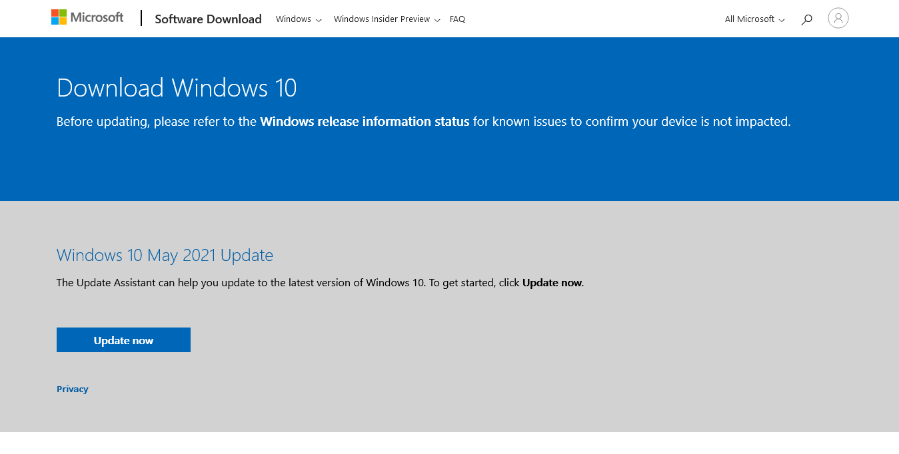
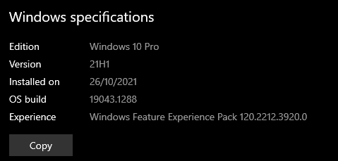

When you get your laptop back from it being factory reset, there are a couple of things you have to do to get it to a reasonable stage. Depending if they have fixed the issues by the time you get your laptop back, you may have only one or none of these issues, so it's a good idea to check.
The school may have, like they did for me, flashed a very old image of Windows onto your laptop, so old that not even Windows update can get you up to date. Head over to Settings → Update & Security → Windows Update and click "Check for Updates" to see if Windows can bring you up to date. Then, once Windows Update says you're up to date, head over to Settings → System → About, scroll down to "Windows Specifications" and find where it says "Version". If the four digit code begins with a "21" or above, you're most likely up to date. If the code begins with "20" or less (it most likely says "1511"), then follow the steps below.
Head over to https://www.microsoft.com/en-au/software-download/windows10 and click the blue "Update Now" button to download the tool.
The assistant will open a window that you will need to work though. Before proceeding, however, make sure your laptop is plugged in and charging; depending on your internet speed this may take a while. Then, continue through the assistant and it should begin downloading and then installing the latest version of Windows.
When the installation is complete, Windows will ask you to restart. It may do so automatically in 30 minutes if left unattended, however it is best if you manually restart to make sure everything is running smoothly
After your laptop boots back into Windows, check that you are on the latest version. Head over to Settings → System → About and scroll down to Windows Specifications. Find where it says Version, which should start with "21" or higher. Mine below says "21H1", but yours may be newer, either "21H2" or a code beginning with a higher number. If this is not the case, you're laptop may still not be up to date.
Now that you're on a much newer Windows version, there may be some final updates which need to be done. Head over to Settings → Update & Security → Windows Update and "Check for Updates". These updates may take a while to install and may require another restart.
The easiest way to check if you have this issue is to head over to Settings → Update & Security → Activation and find where it says near the top "Activation" followed by either an error message or the text "Windows is activated ...". If your laptop says Windows is activated, then you have no issue, but if it says Windows is not activated, or it cannot find a product key. The issue with this is that IT has given us all the same product key, so only one person can use the key. As I was the first to activate my Windows, I have that product key activated, but nobody else can use it. As of right now, you essentially have three options:
Originally, our laptops came with Windows 10 Pro Education, which is very similar to Windows 10 Pro, but with a few changes. I'm not 100% sure of all the implications of using this version of Windows over regular Windows 10 Pro, however from what I have seen, you probably won't notice a difference between the two versions. Before taking these steps, I recommend having a look into Windows 10 Pro Education and seeing if there is anything that you do not want.
Laptops store their original product key somewhere on the computer itself, rather than in software, so no matter what happens, you can always have an activated version of Windows. To find this, firstly open Powershell as Administrator. This can be done by right clicking on the start menu button in the bottom right of your screen and selecting "Windows Powershell (Admin)" from the list. When the popup box appears, select "Yes".
Copy and paste the below line of code into the Powershell window that has just popped up and press enter
wmic path softwarelicensingservice get OA3xOriginalProductKey
On the line or two below where you pasted the code into, there should now be a product code with 25 characters separated by dashes in the format of:
XXXXX-XXXXX-XXXXX-XXXXX-XXXXX
Highlight this text and copy it. Powershell is weird, so to copy it, you need to highlight it and press the "Enter" key.
Head over to Settings → Update & Security → Activation and find near the bottom of the page where it says to "Change Product Key". Click the button, and when asked, paste your new product key into the box. Then continue through the process. Afterwards, Windows may need to restart or do some updates.
I strongly recommend not doing this as Windows 10 is quite expensive to buy. However, the process to activate Windows with a purchased product key is the same as the previous solution. So, if you do wish to purchase a new copy of Windows, then once you have the new product key, follow the steps that comes with it, or if there are none, follow the previous fix from Step 4.
Hopefully I can speak to IT about this issue further before we graduate and see if there is anything else that can be done to get all of you with the proper version of Windows. I have no idea whether or not anything can be done, but I'm going to try. When I know more, I'll update this page. Please keep in mind, however, that if you leave Windows unactivated for too long, you may begin to face issues with using your computer. If something does happen that restricts your usage of your laptop, consider one of the other options. If you do proceed with Fix 1, you should be able to change your product key and edition of Windows if a better fix comes out later down the track.
So there you go, if there are any issues you run into in the process, or there is something else wrong with your Windows install, feel free to contact me. Places where you can contact me are below: